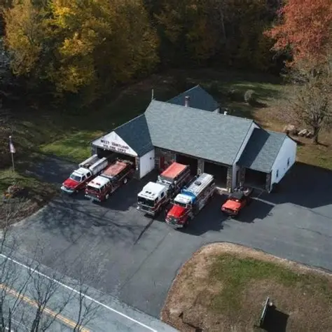

Who We Are
WHVFD is located at 152 Center Street in West Hartland. We provide primary fire suppression within our district, serve as supplemental first responders for ambulance calls, and take part in a district-wide tanker task force.
Serving our community with pride
The West Hartland Volunteer Fire Department is a 100% volunteer organization established in 1930. We provide fire suppression, rescue, and limited medical services to the Hartland community. Our members are committed to protecting lives, property, and the community through emergency response, public service, and mutual aid.
We hold monthly meetings and welcome prospective members who are interested in serving their community.

West Hartland Volunteer Fire Department serves the West Hartland section of Hartland, Connecticut.
WHVFD is located at 152 Center Street in West Hartland. We provide primary fire suppression within our district, serve as supplemental first responders for ambulance calls, and take part in a district-wide tanker task force.
Learn more about some of the primary apparatus used by the department.
Engine 1 is our primary attack pumper and is used for most fire calls within town.
Read moreRescue 3 is a light pumper modified for rescue work and is the primary apparatus for medical calls and motor vehicle accidents.
Read moreTanker 33 responds to water supply operations, especially for fires in areas without hydrants, both in town and through mutual aid.
Read moreRecent department updates, projects, and announcements.
The West Hartland Volunteer Fire Department is proud to announce the addition of a new Utility Task Vehicle (UTV), made possible through the generous support of the Northwest Connecticut Community Foundation Douglas and Janet Roberts Fund.
Read articleView additional news, announcements, and department updates on our news page.
View all news